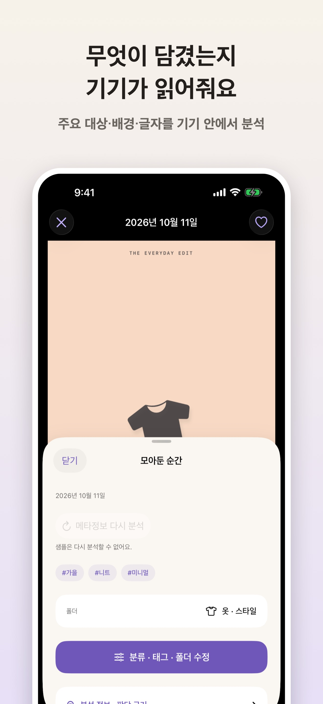
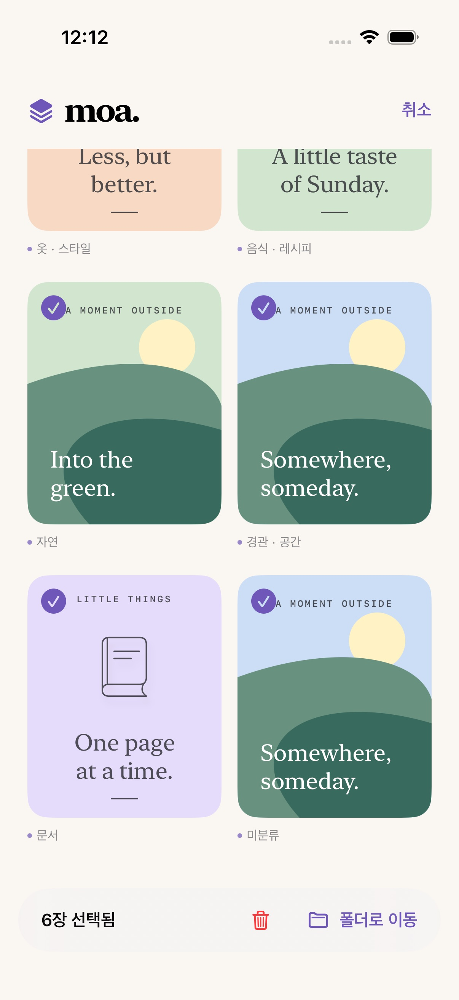
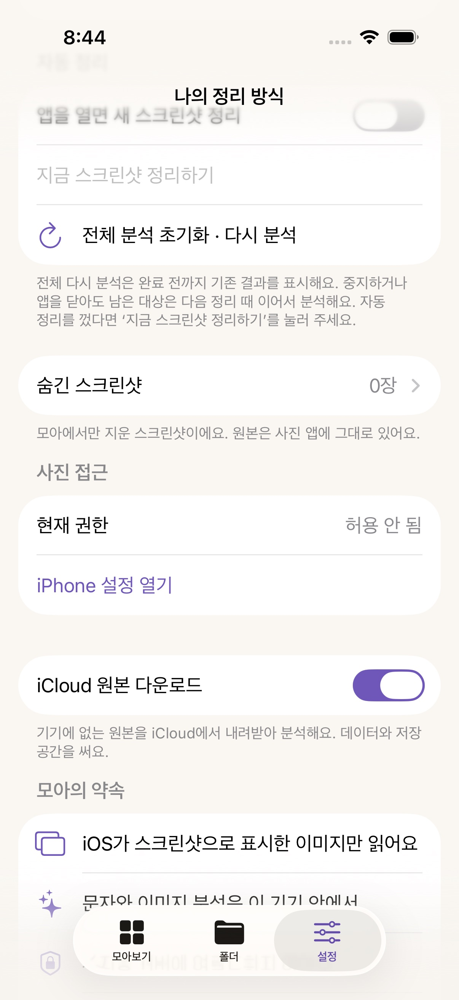
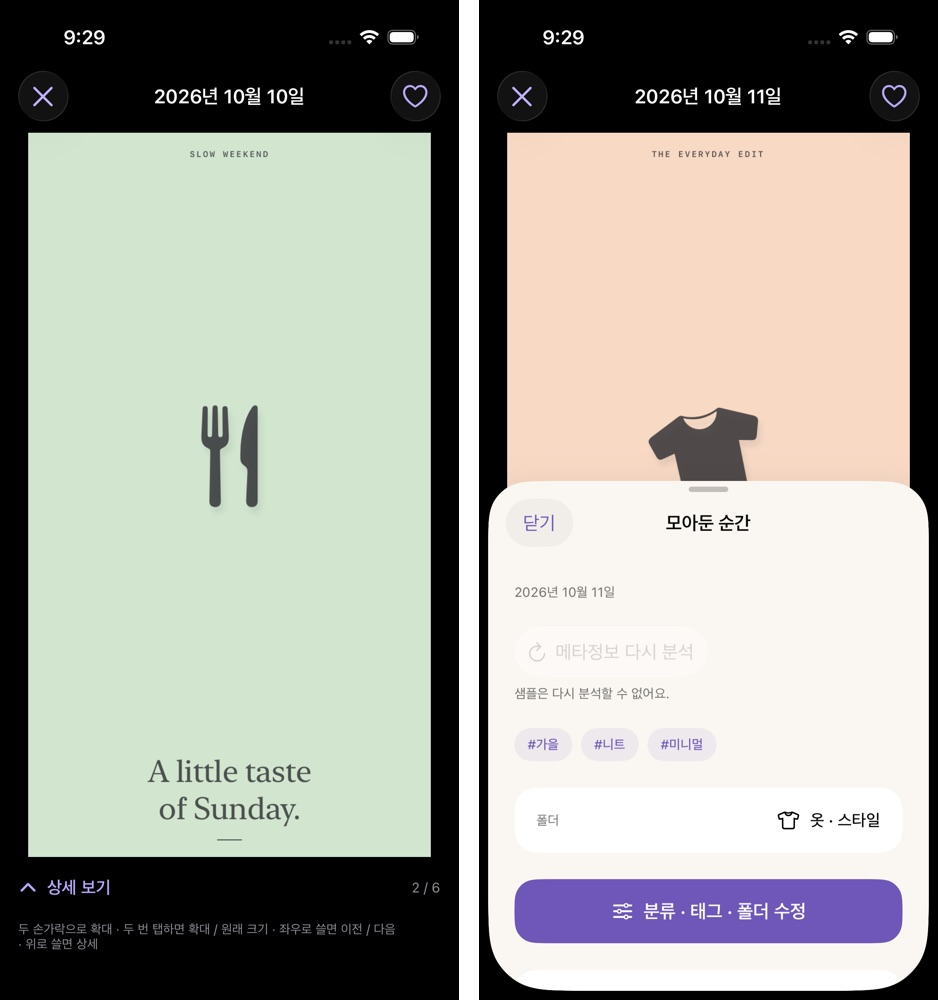

🎉 [Moa] v1.8 릴리즈
📅 1.8 (빌드 17) 심사 제출: 2026-10-12 · 이전 글: v1.3 (2026-09-28)

Moa v1.8을 심사에 올렸습니다. 지난 글에서 “심사 중”이라고 적었던 v1.4가 다음 날 통과했고 그 뒤 보름 동안 v1.5, v1.5.1, v1.6, v1.6.1, v1.6.2가 차례로 App Store에 나갔습니다. v1.7은 심사 대기 중에 거둬들이고 그 내용을 v1.8에 합쳤습니다. 이번 글은 이 여덟 번의 제출을 한 번에 정리합니다.
이 기간에 집중한 것은 실기기에서 실제 보관함으로 돌렸을 때만 드러나는 문제였습니다. 시뮬레이터 테스트는 매번 통과했는데, 1,400장이 넘는 진짜 보관함에서는 광고가 안 보이고, 끌어서 고르기가 안 되고, iCloud에만 있는 원본이 계속 건너뛰어지고, 긴 정리가 ‘작업 실패’로 끝났습니다. 각각 어디서 막혔고 무엇을 골랐는지를 적어 둡니다.
✨ What’s New
광고가 실제로 나가기 시작했습니다 (v1.5.1)
지난 글 끝에 “광고 칸이 실제로 채워진 화면은 아직 보지 못했다”고 적었습니다. 9월 29일에 운영 설정 Release 빌드로 60초 동안 광고 요청을 찍어 보니 64번 모두 No ad to show였습니다. 앱 ID·광고 단위·SDK 연결은 정상이었고 AdMob 콘솔에서 모아는 여전히 ‘검토 필요 · 광고 게재가 제한됨’이었습니다. 콘솔이 내놓은 사유는 app-ads.txt가 계정 정보와 맞지 않는다는 것이었는데, 실제 파일 내용은 인증 화면이 요구하는 줄과 같았고 개발자 웹사이트도 이미 인증된 다른 앱과 같은 주소였습니다. v1.3 이전 마케팅 URL이 비어 있던 때의 결과가 남은 것으로 보고 다시 크롤링을 요청했습니다.
10월 1일에 다시 보니 ‘준비됨 · 광고 게재 사용 설정됨’으로 바뀌어 있었습니다. 그런데 이번엔 숫자가 이상했습니다. 최근 7일 요청 5,280건, 일치율 27.5%, 노출 25건. 일치한 요청이 1,450건쯤인데 노출이 25건이라는 건, 채워진 광고 대부분이 사용자가 스크롤해 내려가지 않은 칸에 들어가 보이지도 않고 버려졌다는 뜻이었습니다. 원인은 모아보기를 열 때 모든 광고 칸(스크린샷 수 ÷ 8)을 한꺼번에 요청하고 실패한 칸은 화면에 다시 들어올 때마다 또 요청하던 코드였습니다.
v1.5.1에서는 광고 칸 앞의 8장 블록이 화면에 나타날 때 그 칸 하나만 요청하도록 바꿨습니다. 마지막 블록이 8장을 못 채우면 칸이 없으니 요청도 하지 않고 실패한 칸은 같은 화면에서 다시 요청하지 않습니다. 비개인화 광고만 요청한다는 원칙은 그대로입니다.
| AdMob 최근 7일 | 요청 | 노출 | 일치율 |
|---|---|---|---|
| 10-01 확인 (변경 전) | 5,280 | 25 | 27.5% |
| 10-08 확인 (v1.5.1 출시 6일 뒤) | 2,130 | 151 | 98.9% |
| 10-11 확인 | 366 | 127 | 96.7% |
요청은 줄고 노출은 늘었습니다. 다만 일치율이 오른 건 요청 축소와 10월 1일의 게재 제한 해제가 겹친 결과라 둘을 떼어 볼 수는 없고 1.5 이하 버전 사용자의 요청도 섞여 있습니다. 예상 수입은 주 단위로 몇 센트 수준이고 표본이 작아 eCPM 변화는 해석하지 않았습니다.
그래서 지난 글의 질문에 답하자면 — 광고는 이제 채워지고 노출도 집계됩니다. 하지만 광고가 들어찬 실제 화면 캡처는 이번에도 남기지 못했습니다. 이 글에 광고 화면이 없는 이유입니다.
꾹 눌러 끌면 범위가 선택되고, 가장자리에서 목록이 따라 내려갑니다 (v1.6)
v1.4의 여러 장 선택은 꾹 누르면 선택 모드에 들어가는 데서 끝났습니다. 같은 손가락으로 계속 끌어도 범위 선택으로 이어지지 않고 그냥 스크롤이 됐고 화면 가장자리까지 끌어도 목록이 내려가지 않아 한 화면에 보이는 만큼만 고를 수 있었습니다. 실기기에서 “꾹 눌러 아래로 끌며 묶어 고르기가 안 된다”는 지적이 들어왔습니다.
꾹 누르기를 카드마다 붙은 SwiftUI 제스처에서 격자 전체의 UILongPressGestureRecognizer 하나로 옮겼습니다. 0.35초를 누르면 손가락 아래 카드가 범위의 시작점이 되고 그 뒤 같은 터치의 움직임은 방향과 상관없이 범위 선택입니다. 0.35초 전에 움직이면 평소처럼 스크롤됩니다. 손가락이 위·아래 가장자리 80pt 안에 들어오면 깊이에 비례해(최대 초당 1,200pt) 목록이 스크롤되고 그사이 손가락 아래를 지나간 카드도 범위에 들어갑니다. 선택 모드에서 옆으로 쓸어 고르는 기존 방식도 같은 자동 스크롤을 씁니다.

시뮬레이터에서는 첫 카드를 누른 채 아래 가장자리까지 끌고 3초 멈추면 목록이 끝까지 내려가며 여섯 장이 모두 선택되는 것을 테스트로 확인했습니다. 실기기 손맛은 Debug 빌드로 직접 써 보고 조정 요청 없이 넘어갔지만 자동 스크롤 속도와 0.35초 임계값을 수치로 검증하지는 않았습니다.
iCloud에만 있는 원본: 축소본으로 분석하려다 건너뛰기로 정정했습니다 (v1.6.1 → v1.6.2)
실기기에서 정리를 돌리면 매번 “28장은 읽거나 분석하지 못했어요”가 떴습니다. ‘iPhone 저장 공간 최적화’를 켜 둔 기기라 원본이 iCloud에만 있는 스크린샷이었고 Moa는 네트워크를 끈 채 원본만 요청했기 때문에 매번 같은 28장을 건너뛰고 있었습니다.
v1.6.1에서는 설정에 ‘iCloud 원본 다운로드’ 토글(기본 꺼짐)을 만들고 꺼져 있으면 기기에 남아 있을 축소본(긴 변 1,500pt)을 받아 분석하게 했습니다. 아무것도 내려받지 않으면서 분석은 되는, 가장 좋아 보이는 선택이었습니다.

그런데 토글을 끈 채 정리하자 여전히 28장이 실패했습니다. 실기기에서 PhotoKit이 실제로 뭘 돌려주는지 재 보니, 고품질 축소본 요청은 28장 모두 nil(오류 3164), 빠른 요청은 56×120px짜리 손톱 썸네일만 돌려줬습니다. 저장 공간 최적화가 이 스크린샷들에 남긴 건 OCR도 분류도 못 하는 크기의 사본뿐이었습니다. 축소본 분석은 처음부터 성립하지 않는 길이었던 셈입니다.
v1.6.2에서 축소본 경로를 지웠습니다. 대신 iCloud 전용 원본을 진짜 오류와 따로 세고 정리 결과와 진행 카드에 “N장은 원본이 iCloud에만 있어 건너뛰었어요. 설정의 ‘iCloud 원본 다운로드’를 켜면 정리해요.”라고 안내합니다. 토글 꺼짐 설명도 “건너뛰고 아무것도 내려받지 않아요”로 고쳤습니다. 실기기 테스트에서 토글을 끄면 1,474장 중 iCloud 전용 28장만 건너뛰고 다른 오류는 0건, 켜면 원본이 내려와 가로 500px을 넘는 실제 해상도로 분석되는 것을 확인했습니다. 다른 기기나 iOS 버전에서 최적화 모드가 더 큰 사본을 남기는지는 보지 못했습니다.
사진 앱처럼 보는 흐름 (v1.7, v1.8에 포함)
전에는 카드를 탭하면 상세 시트가 먼저 열리고 그 안의 이미지를 한 번 더 눌러야 전체 화면이 떴습니다. 전체 화면에서는 한 장만 볼 수 있어 이전·다음으로 넘어갈 방법도 없었습니다. 사진 앱처럼 “탭하면 바로 크게, 쓸어서 다음 장, 필요할 때만 상세”가 맞다고 봤습니다.
이제 카드를 탭하면 전체 화면이 바로 열리고 격자에 보이던 순서대로 좌우로 넘깁니다. 위로 쓸거나 ‘상세 보기’를 누르면 태그·폴더·분석 근거가 담긴 ‘모아둔 순간’ 시트가 반 높이로 올라오고 아래로 쓸면 격자로 돌아갑니다. 즐겨찾기 하트는 전체 화면 툴바로 옮겼습니다.

처음에는 SwiftUI의 TabView(.page)로 페이지를 넘겼습니다. 시뮬레이터 테스트는 통과했는데 실기기(스크린샷 1,474장)에서 빠르게 여러 번 쓸면 페이지가 경계 사이에 멈춰 두 장이 반씩 보였습니다. 확대하지 않았을 때 안쪽 스크롤을 끄는 식으로 손봐도 남아서 결국 사진 앱과 같은 UIPageViewController로 갈아탔습니다. 확대한 채 옆으로 쓸면 확대가 100%로 풀리던 문제는 UI 테스트가 잡았고 전체 화면이 뜰 때 뒤의 목록이 한 번 검게 번쩍이던 문제는 실기기에서 보고 고쳤습니다. 화면이 바뀌었으므로 App Store 세 번째 스크린샷도 세 언어 모두 새로 찍었습니다(맨 위 이미지).
확대한 상태에서 이미지 가장자리에 닿으면 다음 장으로 넘어가는 사진 앱의 세부 동작은 지원하지 않습니다.
긴 백그라운드 정리가 ‘작업 실패’로 끝나지 않게 (v1.8)
1,400장을 백그라운드로 정리하면 다이내믹 아일랜드에 ‘스크린샷 정리 · 작업 실패’가 남았습니다. 앱이 실패를 보고하는 경로는 이미 막아 둔 상태라 처음엔 원인을 몰랐습니다. iPhone 15 Pro에 연결해 시스템 로그(dasd)를 받아 보고서야 알았습니다. iOS는 BGContinuedProcessingTask의 진행 수치가 일정 시간 변하지 않으면 작업이 멈췄다고 판정해 끝내 버립니다. 이 기기에서는 36초 공백에서 끊겼습니다(Apple이 기준 시간을 공개하지는 않았습니다). Moa는 한 장이 끝날 때만 수치를 올렸는데, 이 기기에서 한 장은 백그라운드에서 6~12초가 걸려 공백이 길어질 수 있었습니다.
진행 단위를 장당 100으로 쪼개 iCloud 다운로드·이미지 로드·분석이 끝날 때마다 올리고 작업이 살아 있는 동안 10초마다 1씩 더 올려 한 장이 오래 걸려도 수치가 멈추지 않게 했습니다. 수정 뒤 실행에서는 잠금 상태로 37분이 지나도 정지 판정이 없었고 진행 갱신 공백은 최대 11초였습니다.
같은 실행에서 iOS가 디스크 쓰기 초과 리포트도 남겼습니다. 47분 동안 4.3GB를 썼다는 내용이었습니다. 보관함이 JSON 파일 하나인데 장마다 그 파일 전체를 다시 쓰고 있었습니다. 저장을 10장마다 한 번과 정리가 끝날 때 한 번으로 묶었습니다. 대신 앱이 강제 종료되면 마지막 저장 이후 최대 10장은 다음 정리에서 다시 분석됩니다. 수정 후 쓰기량은 아직 다시 재지 않았습니다.
이미 남은 ‘작업 실패’ 카드는 같은 식별자로 새 작업을 요청해도 대체되지 않았고 사용자가 직접 밀어 닫는 수밖에 없었습니다. 앱을 앱 전환기에서 밀어 닫을 때 iOS가 남기는 실패 카드도 앱이 막을 수 없습니다.
정리 속도: 장당 3.8초에서 1.3초로 (v1.8)
위 문제를 쫓다가 숫자 하나가 계속 걸렸습니다. 9월 측정 테스트에서는 한 장에 약 1초였는데, 실제 정리는 Release 빌드에서도 장당 3.8초였고 iOS가 ‘느린 작업’ 확인창까지 띄웠습니다. Apple Intelligence를 끄거나 포그라운드로 돌려도 거의 같았습니다.
원인은 정리 작업을 .utility 우선순위로 만든 것이었습니다. 이 우선순위에서는 Vision·Core ML 작업이 효율 코어로 갑니다. 사용자가 직접 시작한 정리이니 .userInitiated로 올렸고 스크롤 중에는 분석을 멈추는 기존 동작은 그대로 뒀습니다.
| 조건 (iPhone 15 Pro, Release, 1,452장 전체 재분석) | 장당 |
|---|---|
.utility, 포그라운드 (Apple Intelligence 켬 / 끔) | 3.65초 / 3.77초 |
.utility, 백그라운드 | 3.9초 |
.userInitiated, 포그라운드 | 1.38초 |
.userInitiated, 백그라운드 | 1.28초 |
바꾼 빌드로 끝까지 돌린 실행은 약 50분 걸려 1,428장을 분석하고 iCloud 전용 24장을 건너뛰었습니다. 중간에 발열로 장당 8.4초까지 떨어진 구간이 있어 평균은 2.1초였습니다. 같은 발열 저하는 .utility로 돌린 낮 실행에서도 있었고 몇 분 뒤 돌아왔습니다. 느린 작업 확인창은 이 실행에서도 한 번 떴습니다. .userInitiated의 배터리 소모는 재지 않았습니다.
🔧 Improvements
- 모아에서만 지우기와 원본 삭제 (v1.5) — 상세 화면과 선택 막대에서 한 장 또는 여러 장을 지웁니다. ‘모아에서만 지우기’는 다음 정리에서 건너뛰고 설정 ‘숨긴 스크린샷’에서 되돌릴 수 있으며 직접 고친 분류·태그·폴더도 함께 돌아옵니다. ‘원본도 삭제’는 iOS 확인을 한 번 더 거쳐야 지워집니다. 그래서 “원본을 변경하지 않는다”던 약속을 “원본은 직접 삭제를 고를 때만 지운다”로 바꾸고 개인정보처리방침도 고쳤습니다
- 취향이 쌓이는 폴더 (v1.5) — 미분류는 장수와 상관없이 맨 뒤에 섭니다. 옆의 ‘폴더 선택’은 ‘모두 보기’로 바꿔 폴더 탭으로 넘어갑니다
- 평가 요청 (v1.8) — v1.4에서는 세 번째 폴더 이동 직후 기기에서 딱 한 번만 물었습니다. 이제는 이동 직후가 아니라 다음에 모아보기 화면이 보일 때 묻고 앱 버전마다 한 번만 묻습니다. 폴더 선택 시트가 닫히는 위로 팝업이 겹치지 않게 하려는 것입니다. 실제로 띄울지는 iOS가 정합니다(1년에 최대 3번)
🐛 Bug Fixes
- 다이내믹 아일랜드에 정리 표시가 쌓이던 문제 (v1.5) — 앱을 열 때마다 새 스크린샷이 한 장만 있어도 백그라운드 작업을 새로 요청해 표시가 쌓였습니다. 대기열이 20장 이상일 때만 요청하고 식별자를 하나로 고정했으며 iOS가 실행 시간을 거둬 갈 때는 실패 대신 ‘정리를 멈췄어요. 완료한 결과는 저장했어요.‘로 끝냅니다. 이 수정을 바로 내보내려고 심사 대기 중이던 1.5 빌드 10을 취소하고 빌드 11로 다시 냈습니다
📜 Version History
| 버전 (빌드) | 제출 | 출시 | 내용 |
|---|---|---|---|
| v1.4 (9) | 2026-09-28 | 2026-09-29 | 여러 장 선택과 폴더 이동, 내가 만든 폴더 이름 변경·삭제, 한 장은 폴더 하나에, 평가 요청 |
| v1.5 (11) | 2026-09-29 | 10-01 이전 | 삭제와 숨긴 스크린샷, ‘모두 보기’, 다이내믹 아일랜드 표시 정리. 빌드 10 제출을 취소하고 11로 재제출 |
| v1.5.1 (12) | 2026-10-01 | 2026-10-02 | 광고 요청을 화면에 보이는 칸으로 제한 |
| v1.6 (13) | 2026-10-04 | 2026-10-05 | 꾹 눌러 끌기 범위 선택, 가장자리 자동 스크롤 |
| v1.6.1 (14) | 2026-10-05 | 2026-10-05 | iCloud 전용 원본 축소본 분석, ‘iCloud 원본 다운로드’ 토글 |
| v1.6.2 (15) | 2026-10-06 | 2026-10-07 | 축소본 분석 철회, iCloud 전용 원본은 건너뛰고 따로 안내 |
| v1.7 (16) | 2026-10-11 | 출시 안 함 | 사진 앱식 보기 흐름. 심사 대기 중 취소하고 v1.8에 합침 |
| v1.8 (17) | 2026-10-12 | 심사 중 | v1.7 내용 + 백그라운드 정리 중단 수정, 정리 우선순위, 저장 묶기, 버전별 평가 요청 |
날짜는 App Store Connect 제출 기록과 승인 확인 기록 기준입니다. v1.5의 정확한 승인일은 남기지 못했고 10월 1일에 이미 판매 중이었던 것만 확인했습니다.
v1.7을 거둬들인 건 심사 대기 버전은 하나만 둘 수 있어서입니다. 백그라운드 정리 수정이 끝났을 때 v1.7이 심사를 기다리고 있었고 둘을 따로 내보내려면 v1.7 결과를 기다려야 했습니다. v1.7 제출을 취소하고 같은 버전 기록의 번호를 1.8로 바꿔 함께 올렸습니다.
🔜 What’s Next
v1.8 (빌드 17)을 2026-10-12 심사에 제출했고 결과를 기다리는 중입니다.
그 뒤는 미정입니다. 기록에 남은 확인할 것들만 적어 둡니다.
- 저장을 10장마다로 묶은 뒤의 실기기 디스크 쓰기량,
.userInitiated의 배터리 소모 - 느린 작업 확인창이 뜨지 않으려면 진행이 얼마나 빨라야 하는지
- 광고 지표는 11월 초에 한 번 더 봅니다. 그때도 광고가 채워진 화면을 직접 캡처할 수 있을지는 모르겠습니다